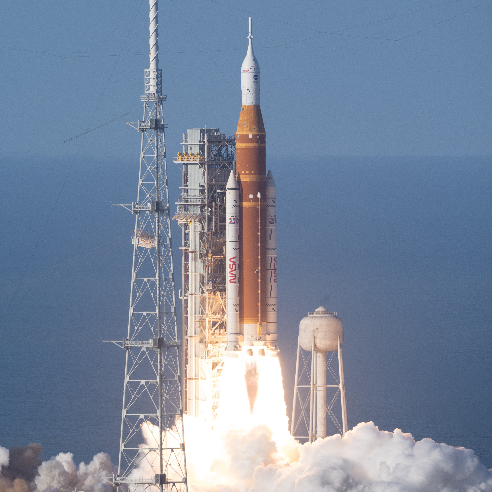
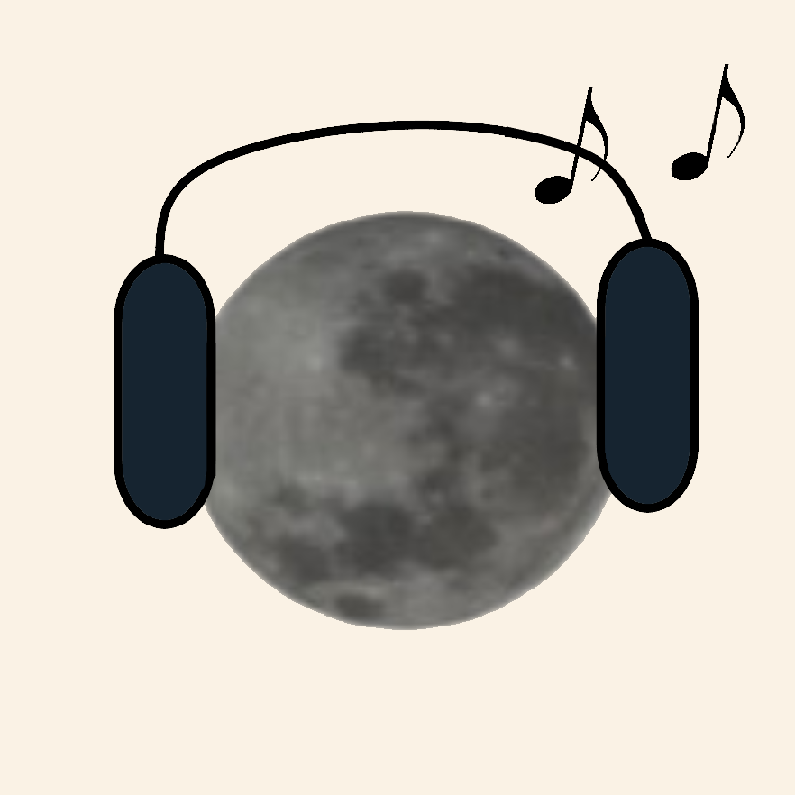
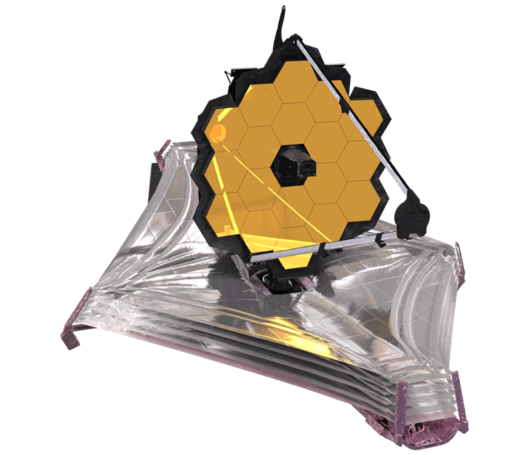
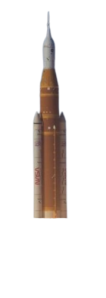
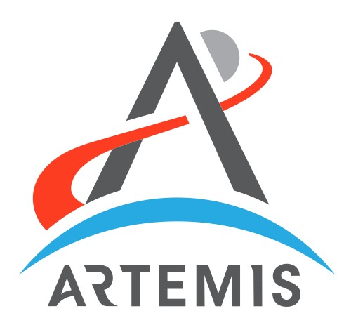
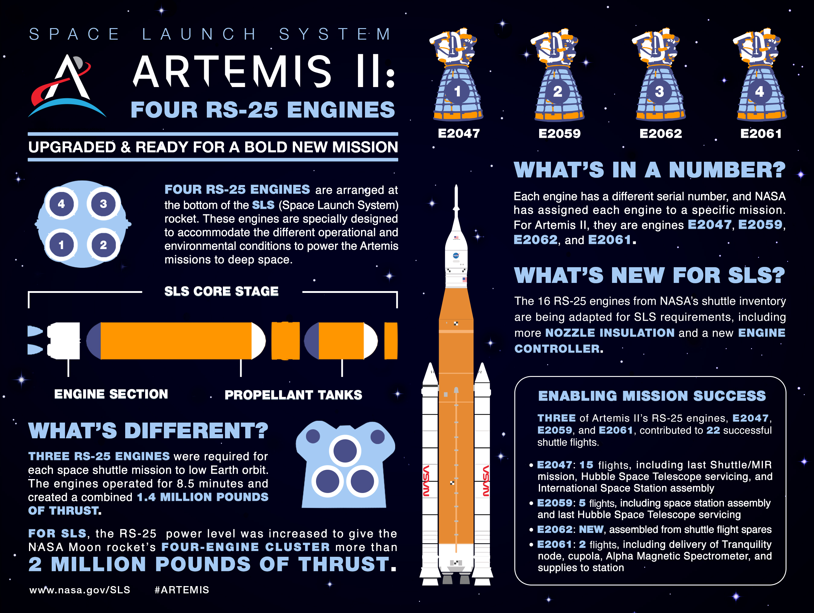
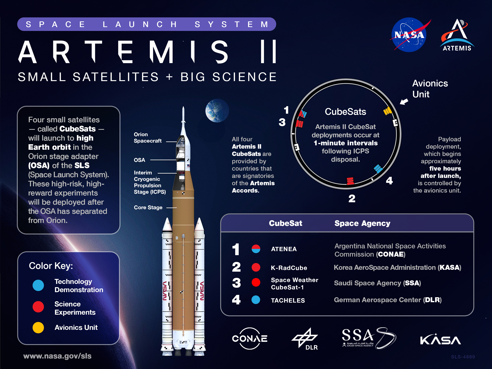
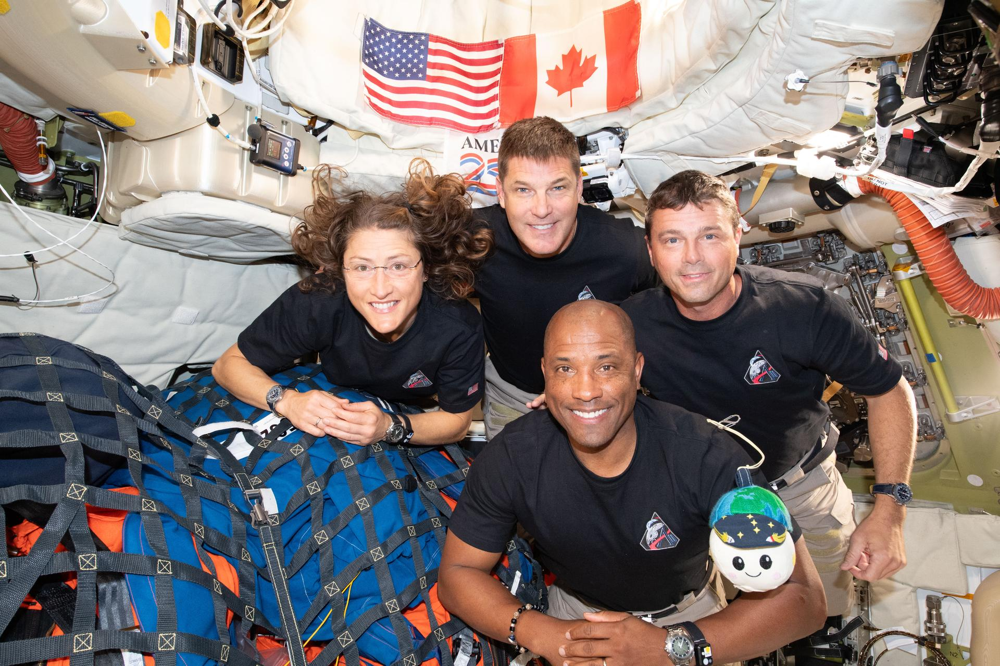

Spacecraft OS
✶ How to catch the ISS? - guide
✶ How to catch starlink? - guide
✶ open start window
19:25 16.07.2026
✶✶✶
X
Hii! Glad you're here!
On this website you can learn about many spacecrafts humanity created.
From huge stations like the ISS to smaller telescopes and satellites.
Each app one the left provides some information and photos from the spacecfraft
(which you can rate from 1 to 5 stars!).
You can write your toughts and ideas on the Spacecraft Ideas app.
Please double click to open.
Hope you'll enjoy this voyage!


Spacecrafts
Ideas

Artemis II
Playlist
✶✶✶
X
Basic information:
1. Built between 2007 - 2021 by Northrop Grumman, Ball Aerospace & Technologies
2. Insertion into orbit: 25.12.2021, 1:20 PM CET
3. Conducts infrared observations
Wait, infrared observations? What does it mean??????
Let's look at how does James Webb Space Telescope look:



James Webb Space Telescope

Astronaut Steven L. Smith on a servicing Hubble mission
Credits: NASA
✶✶✶
X
Basic information:
1. Launch date: April 24 1990, 12:33:51 UTC
2. Named after astronomer Edwin Hubble
3. Built in the 1970s by NASA and ESA
The HST is one of the few telescopes that observes in ultraviolet light.
Besides ultraviolet, his main five instruments conduct observations in visible, and
near-infrared regions of the electromagnetic spectrum
Hubble is the only space telescope designed to be maintained in space by astronauts.
There were five Space Shuttle missions that repaired and upgraded the telescope.
The fifth mission was canceled due to Columbia Disaster. Fortunately, NASA
administrator Michael D. Griffin approved it, and the mission completed successfully in 2009.

Astronaut Kathryn Thornton works on Hubble during Servicing Mission 1
Credits: NASA


Hubble Space Telescope


✶✶✶
X

✶ Artemis I ✶ Artemis II ✶ Artemis III



 There were three astronaut-like mannequins in the Orion spacecraft. Besides them,
Orion carried a Shaun the Sheep toy, representing the ESA's contribution to the mission
and a plushie of Snoopy! The Snoopy was a zero gravity indicator: because of no crew, he
was a visual signal, when the spacecraft has reached the weightlessness of microgravity
There were three astronaut-like mannequins in the Orion spacecraft. Besides them,
Orion carried a Shaun the Sheep toy, representing the ESA's contribution to the mission
and a plushie of Snoopy! The Snoopy was a zero gravity indicator: because of no crew, he
was a visual signal, when the spacecraft has reached the weightlessness of microgravity 




Artemis Mission
✶✶✶
X
Did any of the spacecrafts inspired you? If you have any ideas, write them here:
ADD TITLE
✶ Your toughts and ideas about spacecrafts...
Spacecraft Ideas

✶✶✶
X
Listen to the songs that the Artemis II crew was waking up to!